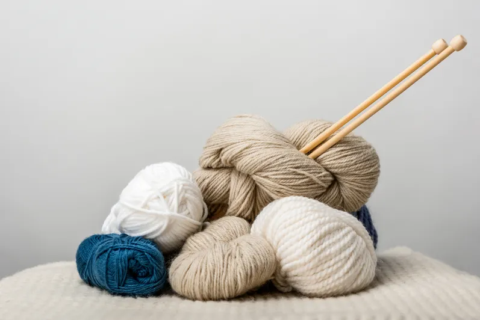

Events
Vores kalender er fyldt med en række kreative workshops, der spænder over forskellige kunstformer og håndværk. Fra maleri og tegning til keramik, tekstilarbejde og meget mere – vi har noget for enhver smag. Hver workshop er designet til at være både lærerig og sjov, og vi har dygtige instruktører, der er klar til at dele deres viden og hjælpe dig med at udvikle dine færdigheder.
05
JAN
13.00-16.00
Nytårscafe med nørklerier og bytte/reste dag
-

Kom og vær med til en festlig nytårsfejring fyldt med kreativitet og hygge! Vi inviterer alle garnentusiaster til en dag med nørklerier og garnbytte, hvor du kan udfolde dine kreative evner og møde ligesindede.
Tag dit overskydende garn med og byt det med andre, så du kan få nye farver og typer garn til dine projekter.
Vi stiller et udvalg af garnrester til rådighed, men du er velkommen til at tage dit eget med. Husk også at medbringe dine hæklenåle, strikkepinde og andre nødvendige redskaber.
Vi glæder os til at byde dig velkommen til en inspirerende og hyggelig dag med nytårs nørklerier og garnbytte!
Pris: Medlem: 50 kr. Ikke-medlem: 75 kr.
17
FEB
18.15-21.45
Hækling i ét stykke - Afliv myten om hæklet tøj
-
Mød Charlotte Kofoed Westh, en passioneret hækler og strikker, der de sidste 7-8 år har lavet opskrifter til danske ugeblade. I 2021 udgav hun bogen ‘Nordisk Babyhækling’, som er oversat til flere sprog.
På workshoppen for øvede hæklere vil Charlotte dele sin ekspertise i at hækle tøj uden monteringsarbejde. Der vises modeller hæklet Top-Down, med saddelskulder, raglan og rundt bærestykke konstruktion. Få tips og tricks om garnvalg og hæklemetoder. Materialer: garnrester. Medbring selv garn og Clover hæklenåle fra 4 mm og større samt en udfordrende hækleopskrift.
Følg Charlotte på Instagram: @charlottekofoedwesth
Pris: medlem: 180 kr. – ikke-medlem: 240 kr.
26
APR
10.00-14.30
Sølvværksted - Annegitte Hald Sbildgaard
-
Lær grundlæggende smykketeknikker på workshoppen, hvor du kan lave dine egne ringe, øreringe, armbånd og vedhæng. Du vil lære at udregne din ringstørrelse samt save, lodde, file, slibe, hamre, polere og skabe flotte overflader i sølv. Vi starter med en enkel sølvring, og der er også mulighed for at lave øreringe og vedhæng.
Obligatorisk køb af 2 gram sølv til ca. 50 kr., som betales direkte til Annegitte. Du kan også købe andre materialer som ørekroge og ørestikker.
Der er maksimalt 5 pladser på denne workshop. Deltagerne medbringer egen frokost.
Pris: Medlem 420 kr. - Ikke-medlem 480 kr.